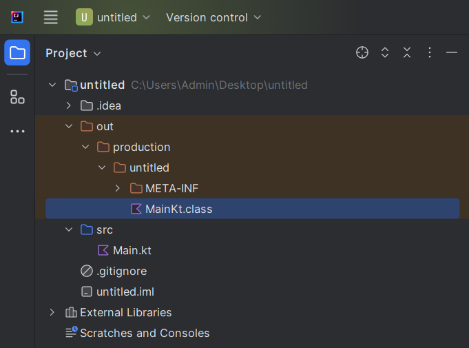

2.9 Диапазоны (range)
Диапазон представляет собой некоторый интервал значений. Для
создания диапазона применяется оператор .. или ключевой слово until. Разница между этими способами заключается лишь в том, что при использовании until в диапазон не включается последнее значение.
Объекты диапазонов могут быть следующих типов:
IntRange;LongRange;CharRange;ClosedRange<Float>- не поддерживает итерацию;ClosedRange<Double>- не поддерживает итерацию.
val range1: IntRange = 1 until 5
val range2: LongRange = 42L..442L
val range3: CharRange = 'a'..'z'
val range4: ClosedRange<Double> = 42.1..442.1
val range5: ClosedRange<Float> = 42.1f..442.1f
В случае с CharRange итерация по символам работать будет, потому что все символы “под капотом” кодируются в целые числа.
Оператор .. позволяет создать диапазон по нарастающей, где каждый следующий элемент будет больше предыдущего. С помощью специальной функции downTo можно построить диапазон в обратном порядке:
Еще одна специальная функция step позволяет задать шаг, на который будут изменяться последующие элементы:
Еще одна функция until позволяет не включать верхнюю границу в диапазон:
С помощью специальных операторов можно проверить наличие или отсутствие элементов в диапазоне:
in: возвращаетtrue, если объект имеется в диапазоне;!in: возвращаетtrue, если объект отсутствует в диапазоне.
fun main() {
val range = 1..5
var isInRange = 5 in range
println(isInRange) // true
isInRange = 86 in range
println(isInRange) // false
var isNotInRange = 6 !in range
println(isNotInRange) // true
isNotInRange = 3 !in range
println(isNotInRange) // false
}
Перебор диапазона
С помощью цикла for можно перебирать диапазон:
val range1 = 5 downTo 1
for(c in range1) print(c) // 54321
println()
val range2 = 'a'..'d'
for(c in range2) print(c) // abcd
println()
for(c in 1..9) print(c) // 123456789
println()
for(c in 1 until 9) print(c) // 12345678
println()
for(c in 1..9 step 2) print(c) // 13579
Диапазоны, прогрессии "под капотом" и декомпилирование
Диапазоны и прогрессии сами по себе не являются итераторами. Для их превращения в итератор вызывается функция iterator() (источник).
Диапазоны "под капотом" языка Kotlin представляют собой объект с определенными свойствами и методами, в рамках которых описано его поведение при осуществелении итерирования (i in объект).
Как известно, при запуске программы IDE компилирует исходный код Kotlin в байт-код JVM (Java Virtual Machine). Если код не содержит ошибок, при компиляции создается один или несколько файлов классов, которые могут выполняться JVM. Грубо говоря, Kotlin JVM является оболочкой языка Java, предоставляющей альтернативный синтаксис. При декомпиляции файла может быть получен исходный код Java.
В директории проекта скомплированный класс находится в папке output:

Рассмотрим декомпилированный код, содержащий интервалы. Декомпиляция выполнена на ресурсе http://www.javadecompilers.com/.
Пример 1
Kotlin:
Java:
import kotlin.Metadata;
@Metadata(
mv = {1, 9, 0},
k = 2,
xi = 48,
d1 = {"\u0000\b\n\u0000\n\u0002\u0010\u0002\n\u0000\u001a\u0006\u0010\u0000\u001a\u00020\u0001¨\u0006\u0002"},
d2 = {"main", "", "untitled"}
)
public final class MainKt {
public static final void main() {
for(int i = 1; i < 6; ++i) {
System.out.print(i);
}
}
// $FF: synthetic method
public static void main(String[] args) {
main();
}
}
Пример 2
Kotlin:
Java:
import kotlin.Metadata;
import kotlin.internal.ProgressionUtilKt;
@Metadata(
mv = {1, 9, 0},
k = 2,
xi = 48,
d1 = {"\u0000\b\n\u0000\n\u0002\u0010\u0002\n\u0000\u001a\u0006\u0010\u0000\u001a\u00020\u0001¨\u0006\u0002"},
d2 = {"main", "", "untitled"}
)
public final class MainKt {
public static final void main() {
int i = 1;
int var1 = ProgressionUtilKt.getProgressionLastElement(1, 10, 2);
if (i <= var1) {
while(true) {
System.out.print(i);
if (i == var1) {
break;
}
i += 2;
}
}
}
// $FF: synthetic method
public static void main(String[] args) {
main();
}
}
Как видно из декомпилированного кода, исходный объект интервалов преобразуется в цикл for, а прогрессия в цикл while (true).
Резюме
fun main() {
val range = 1..5 // диапазон [1, 2, 3, 4, 5]
val range2 = 5 downTo 1 // диапазон в обр. порядке [5, 4, 3, 2, 1]
val range3 = 1..5 step 2 // диапазон c шагом [1, 3, 5]
val range4 = 1..<5 // диапазон [1, 2, 3, 4]
val range5 = 1 until 5 // диапазон [1, 2, 3, 4] старая запись
// Объекты диапазонов могут быть следующих типов:
// - IntRange
val intRange: IntRange = 1..5
// - LongRange
val longRange: LongRange = 1L..5L
// - CharRange
// символы “под капотом” кодируются в целые числа.
val charRange: CharRange = 'a'..'d'
// - ClosedRange<Double> - не поддерживает итерацию;
val closedRangeDouble: ClosedRange<Double> = 1.1..5.1
// - ClosedRange<Float> - не поддерживает итерацию
val closedRangeFloat: ClosedRange<Float> = 1.1f..5.1f
println(range2.toList())
}